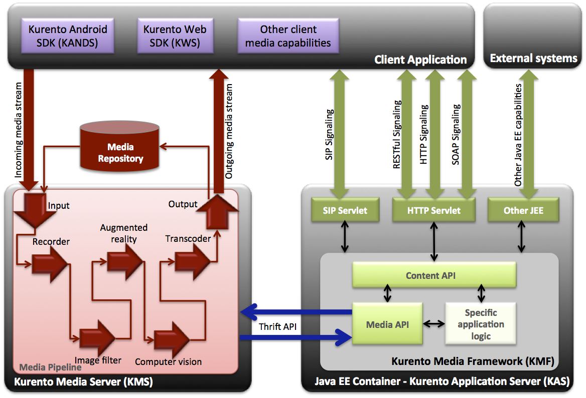

Kurento is an Open Source Software WebRTC media server

Kurento Architecture
Kurento architecture
As depicted in the figure below, Kurento architecture comprises three main components:

Figure 1. Kurento architecture which provides three main components. Kurento Application Server (right), Kurento Media Server (left) and Kurento client side capabilities (top).
-
Kurento Application Server (KAS): This consists on a Java EE compatible container (such as JBoss, Tomcat or equivalent) on top of which the Kurento Media Framework (KMF) is deployed. KMF has been conceived to provide Java developers a rich toolbox suitable for satisfying common requirements emerging in multimedia services. KMF comprises two sub APIs.
- Content API: This is a signaling API, meaning that it is in charge of managing control communications with the client. It provides developers the ability to specify the application logic that executes when specific events occur (e.g. when the client wants to establish a session, when the media exchange starts, when media exchange concludes, when errors arise, etc.) Thanks to this API, developers can customize aspects such as authentication, permissions, accounting, etc. For all this, developers will have access to the rich environment exposed by the Java platform.
- Media API: This is a media control API. It consists on stubs that make possible controlling the lifecycle and behavior of Kurento Media Server (KMS) media capabilities. The Media API is an abstract API so that most of the complex low level details (garbage collection, format and codecs, etc.) are hidden.
- Kurento Media Server (KMS): KMS is the core of the Kurento infrastructure. It is a media server written on top of GStreamer, which offers different types of media capabilities such as media reception and delivery through different protocols and formats (e.g. RTP, SRTP, HTTP, etc.), media transcoding for the most popular formats and codecs (e.g. H.264, H.263, VP8, etc.), media recording, media playing, computer vision, augmented reality and others.
- Kurento client side APIs: These include Kurento Web SDK (KWS) and Kurento Android SDK (KANDS). Both of them make possible to access Kurento infrastructure capabilities in a simple and seamless manner.
Other relevant aspects of the Kurento software stack are the following:
The media element building block.
A media element is a building block that encapsulates a given media capability. KMS provides specific media elements for sending, receiving, transforming, augmenting, recording and processing video flows. The Media API allows instantiating and connecting media elements as if they where pieces of a meccano. As a result, developers can create customized media pipelines defining complex processing chains for their media streams.
SIP signaling
Java EE environments provide support for SIP signaling through the SIP Servlet API. Kurento Media API can be directly used from any SIP Servlet implementation including Mobicents. This makes possible to use all the capabilities of Kurento Media Server in the context of SIP applications directly in Java. This means that you can easily add media recording, video playing, computer vision and other features to your SIP applications.
Media Repository
Kurento Media Server provides an elastically scalable media repository where media clips, media tags and metadata can be stored. Kurento repository is based on Mongo GridFS. For this reason, it inherits all the features of that powerful database such as sharding, fault tolerance, redundancy, high performance, interoperability, etc. Mongo capabilities can also be used for performing search queries against tags and metadata.
To learn more
If you are interested in learning more, consider reading the Kurento Media Capabilities Section.